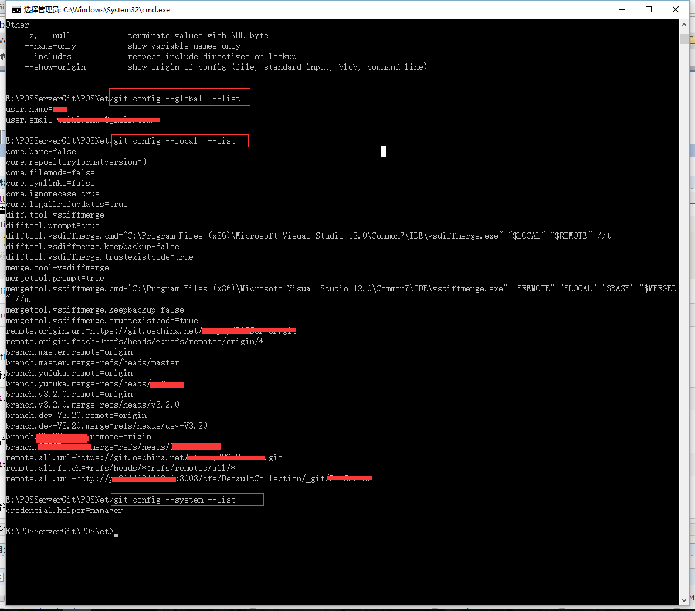

| 创建时间： | 2017/3/8 星期三 14:10 |
| 更新时间： | 2017/3/8 星期三 14:10 |
| 作者： | 王平安 |
config 配置指令
1 | git config |
config 配置有system级别 global（用户级别） 和local（当前仓库）三个 设置先从system-》global-》local 底层配置会覆盖顶层配置 分别使用--system/global/local 可以定位到配置文件
查看系统config
1 | git config --system --list |
查看当前用户（global）配置
1 | git config --global --list |
查看当前仓库配置信息
1 | git config --local --list |
本地测试效果：

由此可见--global中存储了提交用户的email和用户名 如果需要手动设置则可以使用如下指令
1 2 | git config --global user.name "myname"git config --global user.email "test@gmail.com" |